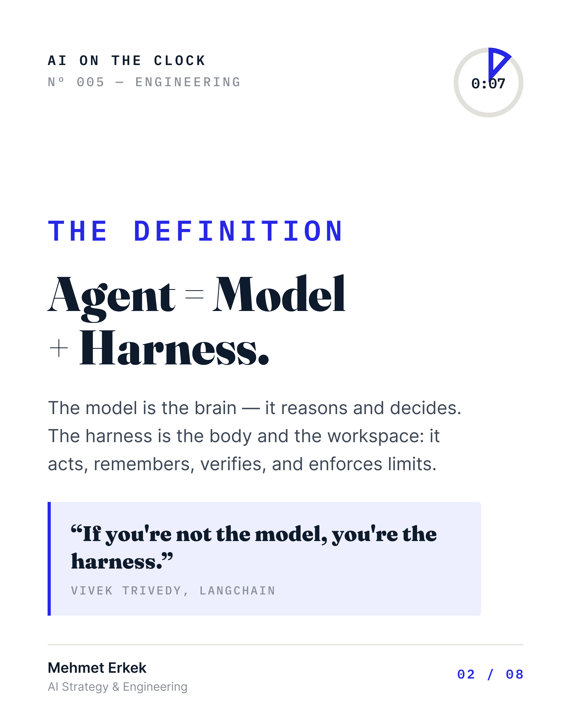
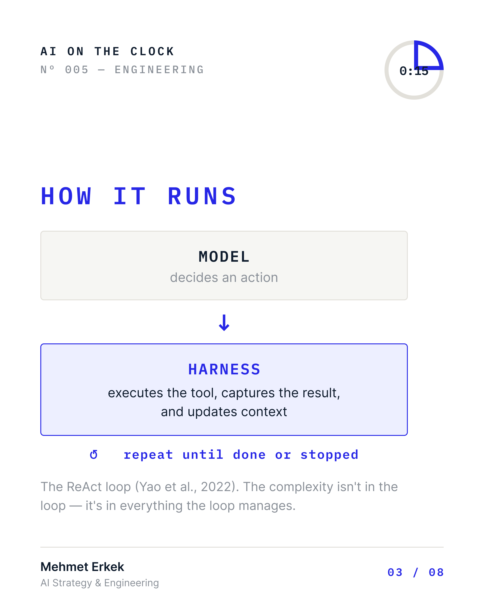
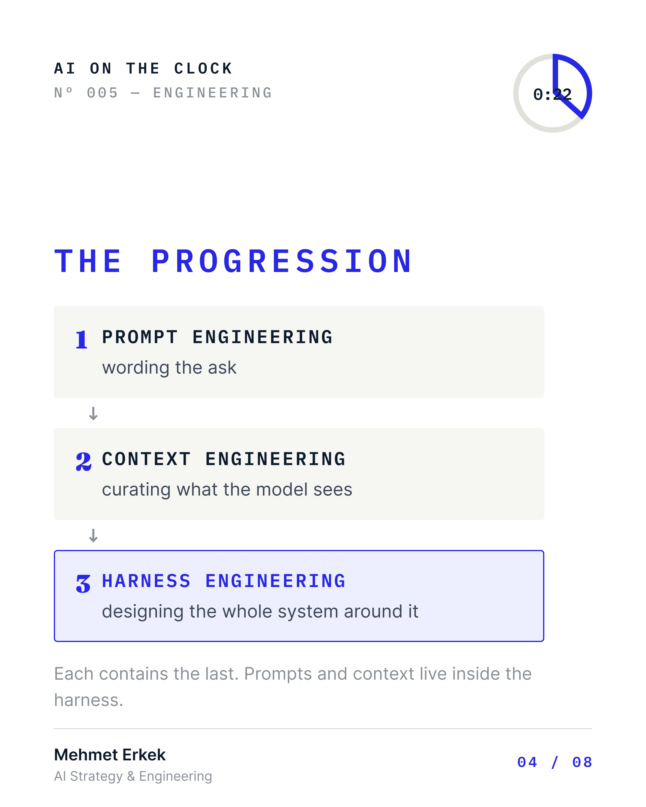
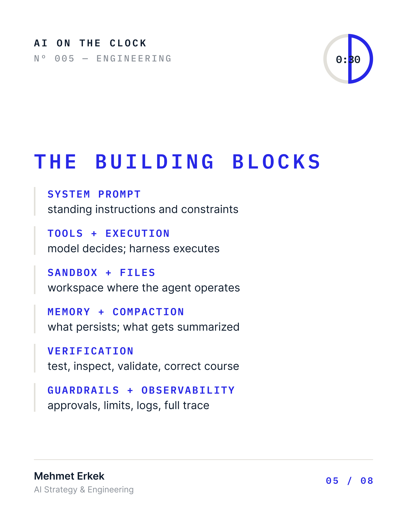
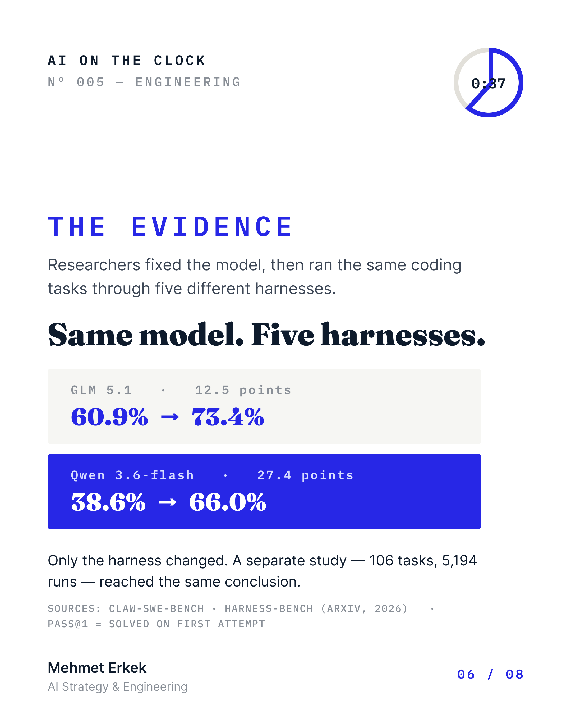
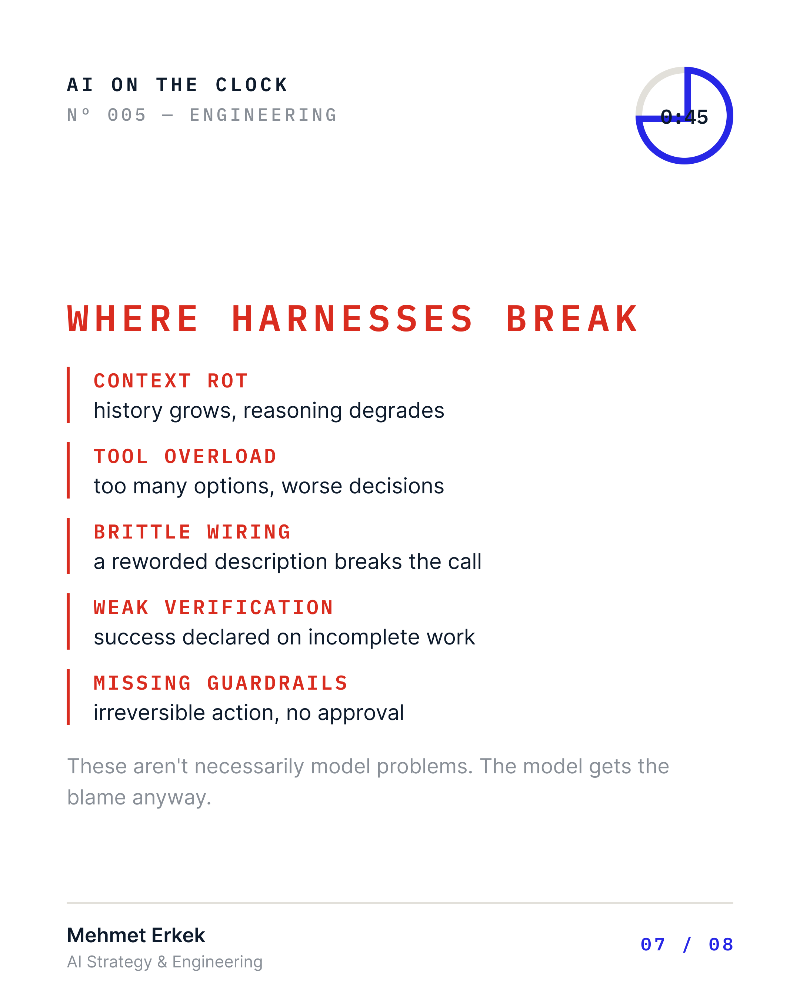
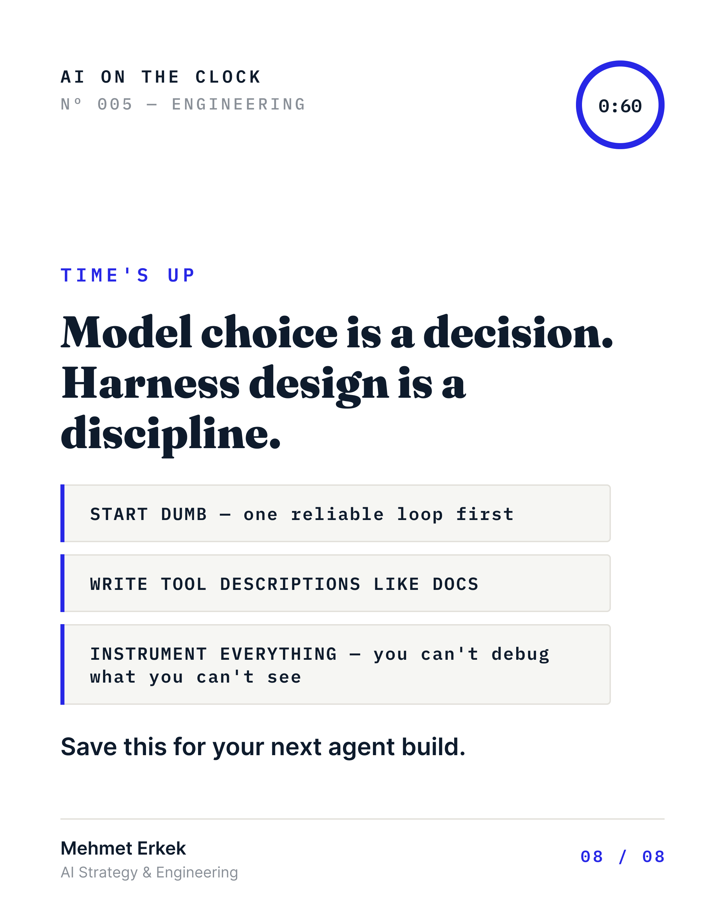

Nº 005 · ENGINEERING · 11 August 2026
What is Harness in AI
Everyone is debating: “Which model is better?” But the same model can go from 38% to 66% success when you change the system around it. The difference isn’t the model — it’s the scaffolding built around it. It’s called the harness. 👇 — Agent = Model + Harness The model is the brain: it reads context and makes decisions. The harness is everything around it — tools, sandbox, memory, verification, guardrails, logging, and execution. A raw model can’t write a file, run your tests, remember what happened last week, or recover from a crash. All of that comes from what’s built around it. As LangChain’s Vivek Trivedy put it: “If you’re not the model, you’re the harness.”








Download the deck (PDF, 8 pages) Read the original on LinkedIn
Everyone is debating: “Which model is better?” But the same model can go from 38% to 66% success when you change the system around it. The difference isn’t the model — it’s the scaffolding built around it. It’s called the harness.
Agent = Model + Harness.
The model is the brain: it reads context and decides. The harness is everything around it — tools, sandbox, memory, verification, guardrails, logging.
A raw model can't write a file, run your tests, remember last week, or recover from a crash. All of that comes from what's built around it.
As LangChain's Vivek Trivedy put it: "If you're not the model, you're the harness."
HOW IT RUNS
Model decides an action → harness executes the tool, captures the result, updates context → repeat until done or stopped.
That's the ReAct loop (Yao et al., 2022). The complexity isn't in the loop — it's in everything the loop manages.
THE PROGRESSION
→ Prompt engineering — wording the ask → Context engineering — curating what the model sees → Harness engineering — designing the whole system around it
Each contains the last.
THE EVIDENCE
Researchers fixed the model, then ran the same coding tasks through five different harnesses:
→ GLM 5.1: 60.9% → 73.4% solved on first attempt → Qwen 3.6-flash: 38.6% → 66.0%
Same model. Same tasks. Only the harness changed.
A second study (106 tasks, 5,194 runs) concluded: capability should be reported per model-harness pair, not per model.
WHERE HARNESSES BREAK
→ CONTEXT ROT — history grows, reasoning degrades → TOOL OVERLOAD — too many options, worse decisions → BRITTLE WIRING — a reworded tool description silently breaks the call → WEAK VERIFICATION — success declared on incomplete work → MISSING GUARDRAILS — irreversible actions, no approval
These aren't necessarily model problems. The model gets the blame anyway.
THREE RULES
- Start dumb — one reliable loop before planning layers or sub-agents.
- Write tool descriptions like documentation. The model reads them.
- Instrument everything. You can't debug what you can't see.
Model choice is a decision. Harness design is a discipline.
Before you swap models again, look at the scaffolding around the one you already have.
What's the worst agent failure you've debugged — and was it really the model? 👇
Sources: Claw-SWE-Bench · Harness-Bench (arXiv, 2026)